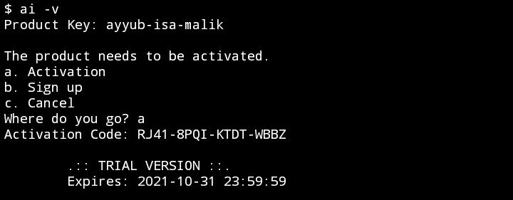

AI (Ayyub-Isa) Console System
(not artificial intelligence)
بِسْمِ اللَّهِ الرَّحْمَٰنِ الرَّحِيمِ
[English US] ·
[Bahasa Indonesia] ·
[Manual]
A. Mukadimah
Alhamdulillaah, segala puji hanya milik Allah SWT yang telah mencurahkan nikmat dan rahmat-Nya, serta berbagai kemudahan dalam pembuatan system ini.
Perkenalkan AI, bukan Artificial Intelligence, tapi hanya singkatan dari nama anak pertama dan kedua saya (AI stands for Ayyub-Isa).
AI adalah sebuah system dengan platform console dan CLI, ditulis dalam bahasa C, dan hanya berjalan di beberapa operating system saja.
Setelah beberapa kali mengalami perbaharuan, mulai versi 2.0.0, akhirnya AI ditulis dalam bahasa PHP juga dan dapat disertakan (included) dalam scripting bahasa tersebut. Tujuan awalnya hanya untuk mempermudahkan diri saya sendiri dalam pembuatan aplikasi di website, tapi ternyata kebutuhan tersebut berlanjut dan kemudian the final decision is going to PHP, sedangkan C hanya untuk file binary execution saja.
Meski saat ini sudah perbaharuan hingga versi 4, namun AI belum pernah release ke public untuk dijual sebelumnya, karena tujuan awal hanya untuk konsumsi pribadi, dengan hanya private license, private operations and private functions only.
Kali ini, saya coba beranikan diri agar AI dibuat commercial. Setelah beberapa tahun lalu gagal dengan aplikasi Android, kali ini kepercayaan diri mulai pudar untuk berjualan aplikasi serupa. Bukan banting setir dari aplikasi Android ke Console, tapi ikhtiar sekaligus menggali potensi, dengan method yang berbeda dan cara bayar yang berbeda pula.
Seperti keumumannya, sebuah software berbayar kebanyakan memiliki trial version. Jadi bagi yang ingin mencoba terlebih dahulu atau tidak mampu membeli system ini, akan disediakan trial version setiap bulannya, tentunya dengan feature terbatas.
Kegunaaan, tujuan dan kelebihan AI diantara yang paling utama adalah encryption. Files, data, documents and communications are more secure. And of course, no spying shit.
Features yang disuguhkan diantaranya, files encryption (tentunya), secure encrypted chat, basic proxy, version control, dan beberapa lagi yang belum dapat disebut.
B. Kelengkapan dan Persiapan
Untuk saat ini, versi distribusi AI hanya 3 jenis, yaitu:
1. Android 5 atau lebih tinggi di console Termux 64bit maupun 32bit
2. Linux* di console Terminal 64bit saja
3. Windows 7 atau lebih tinggi di console CMD 32bit saja
Jika operating system yang anda pakai tidak memadai, maka proses instalasi akan gagal.
*) Linux yang sudah diuji testing diantaranya Ubuntu, Debian, ArchLinux (Arch), CentOS (RHEL) and Linux Mint (Ubuntu/Debian).
Selanjutnya adalah PHP cli versi 7.0 keatas, dengan extension sebagai berikut:
- zlib*
- openssl*
- mbstring*
- sqlite3*
- curl
- zip
- sockets
- json*
- readline**
- gd**
- ftp**
- exif**
- calendar**
- bz2**
- bmath**
*) jika tidak ada secara default
**) optional and recommended
Selengkapnya jika belum mengetahui cara install PHP, lihat caranya di link ini: fb.com/3109029549150783
Kemudian, menyediakan directory kosong sebagai berikut:
- Android (/sdcard/9r3i/ai)
- Windows (%SystemDrive%\9r3i\ai)
- Linux (/9r3i/ai) dengan permission public read and write (40666).
C. Installation
1. Dapatkan file skrip atau download saja dari URL ini
--> https://raw.githubusercontent.com/9r3i/ai/main/ai.setup.php
--> gunakan curl atau wget atau lainnya yang lebih mudah
--> contoh dibawah ini menggunakan wget

2. Eksekusi skrip PHP tadi dengan mengetik ini
--> php ai.setup.php

3. Mulai instalasi
--> php install.ai

4. Kemudian coba ketik
--> ai help
atau coba untuk melihat versi
--> ai -v

5. Masukan product key
--> Product key: ayyub-isa-malik
6. Aktifkan produk
* Kode aktifasi berakhir pada 31 Oktober 2021
--> RJ41-8PQI-KTDT-WBBZ
--> 9Y4P-YISF-MTXB-AZKF
* Kode aktifasi akan diperbaharui setiap bulannya
7. Selesai, cobalah mengetik sesuatu seperti
--> ai help
 D. Akhirul Kalam
D. Akhirul Kalam
Segala kesempurnaan hanyalah milik Allah ﷻ, system ini tidak ada apa-apanya, hanya sebagai penghantar kepada ridha-Nya.
Semoga dapat menjadi bermanfaat bagi seluruh ummat manusia pada umumnya dan ummat Islam pada khususnya.
الْحَمْدُ لِلَّهِ رَبِّ الْعَالَمِينَ
Note: Bagi pengguna yang sudah mencoba.
Mohon untuk tidak sungkan bertanya, memberikan kritik, saran dan apapun unek-unek tentang system ini. Terimakasih.
Bekasi, 2 Juni 2021
Abu Ayyub a.k.a. 9r3i